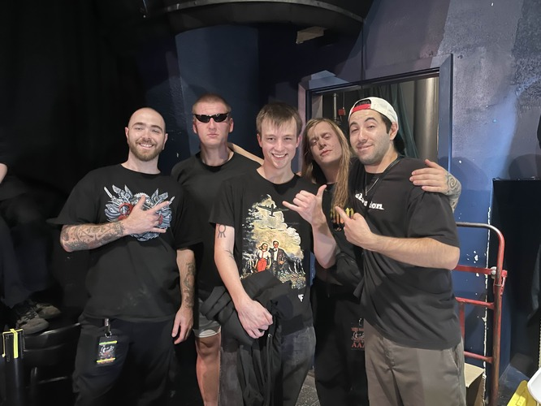
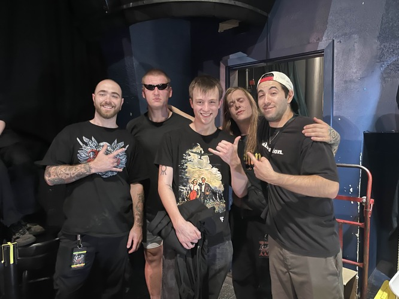

Welcome to the homepage! This website is dedicated to hosting a basic history & discography for the following bands:
- Ómerta, a nu-metal band from Texas
- DEVILOOF, a Japanese visual kei band
- Madman's Esprit, a Korean band with black metal influences
- Hail The Sun, a progressive rock band from California.
About me:
Music is very important to me. Most of the bands on this page are metal, and I consider my music taste to be largely on the heavier side, and that's probably my dad's fault. He raised me on bands like Disturbed, Metallica, Primus, and System of a Down. Basically what you would think of if someone said the words "dad metal". However, unique to my dad's music taste, I prefer metal with a lot more harsh vocals, usually Deathcore or Metalcore. This is actually a pretty new interest of mine in the grand scheme of things, I discovered these genres through live music, and I only started going to shows around 2021/2022, when COVID started to let up.
Here's some images from some of my favorite shows:
 

That's 1. Me and my Girlfriend with the lead singer of Brand of Sacrifice, 2. Hanabie live, and 3. Me and Mouth for War.
Music as a hobby, and my Cerebral Palsy
Because of my interest in music, I wanted to learn an instrument, but for a large part of my life I didn't know if I could ever find success with this. This is due to my disability. I was born with Cerebral Palsy in my right side, and although I have attended very rigorous physical therapy and gained a lot of control over my right side than what you might think of when you hear Cerebral Palsy, fine motor control is still an issue.
Still, pursuing an instrument remained a goal of mine, and I eventually (I think it was 2017 or 2018) got a bass guitar from my mother. While it's been a struggle to reach a level I'm happy with, I consider it a form of physical therapy in it's own right, as it demands a lot of right hand in the fine motor skills department.
Why these bands?
There's a lot of bands I pursue actively, and some I even enjoy more than the one's on this list. So why these bands in particular? Honestly, I believe these bands are each representative of parts of my music taste in a way a lot of other bands aren't. I could talk about 4 deathcore bands, but DEVILOOF has deathcore covered. Omerta represents a more hardcore inspired sound. Madman's Esprit is kind of the poster child for "weird obscure music project", and Hail the Sun is representative of my music taste outside of my usual comfort zone.
I intentionally didn't rank them in any particular order because deciding favorites is really hard, but I think DEVILOOF would be my all-time favorite from this list (or in general, I really like them).